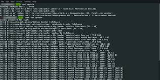
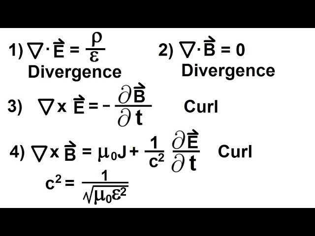

MY PORTFOLIO

Journey to Success
Hello! My name is Justine Boniface Mwala, I am a Computer Science student currently Studying
in the University of in Dar es Salaam.My professional roadmap is heavily focused on mastering software
development and networking, with the goal of transitioning into the cybersecurity field.
I like solving complex technical challenges, examples including object-oriented programming and other computer
related stuffs. My journey in computing started with basic web pages and grew into exploring databases,
backend development, and understanding how the internet works at a deeper level. I am particularly interested in
how technology can improve everyday life for people across East Africa and beyond.
Outside of studies, I enjoy reading, experimenting with new programming tools, and sharing
knowledge with fellow learners. I believe that education and technology together can open
many doors for the better good of the next generation of technology enthusiasts like me.
My Skills
I architect scalable web applications, integrating responsive front-end interfaces with robust database-driven back-ends to deliver high-performance, user-centric digital solutions.
I manage and automate mission-critical server environments, specializing in security hardening, shell scripting, and resource optimization within virtualized Linux systems.
I design and secure complex network infrastructures, optimizing data transmission protocols and hardening perimeters to ensure high availability and resilient connectivity.
Education Background
| Educational Level | School | Years |
|---|---|---|
| BSc in Computer Science | University Of Dar es Salaam | 2025-Present |
| Advanced Secondary Education | Ileje Secondary School | 2023-2025 |
| Ordinary Secondary Education | Mzumbe Secondary School | 2019-2022 |
| Primary School Education | Ilasi English Medium School | 2011-2018 |
Gallery
Click any photo to view it full size ↓
Hobbies and Interests
Building games using engines such as Unity and Unreal. It's been my dream to create immersive gaming experiences that combine storytelling with interactive gameplay, and I'm excited to continue developing my skills in this area.

Experimenting with and configuring local server environments and network commands to optimize systems' performance. System configuration has become a passion of mine, as I enjoy the challenge of fine-tuning settings and optimizing performance to create efficient and secure computing environments.

Exploring more on other Science disciplines such as Physics and Mathematics. I am committed to continuous learning, always seeking out new knowledge and skills to stay at the forefront of technology and innovation. I am dedicated to expanding my expertise and staying curious about the world around me.